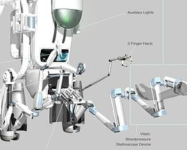
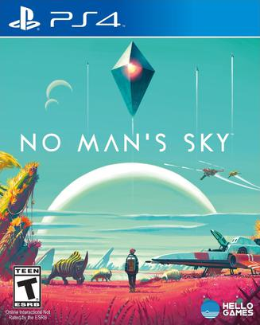
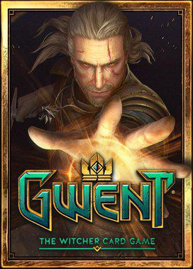

2017年2月
23 条
其中 5 条带正文
广播发布后不可编辑，所以每条都是那一刻的原话。
2017-02-26 16:41:26
想看  海洋深处 / In the Heart of the Sea
海洋深处 / In the Heart of the Sea
2017-02-26 16:39:24
想看 
2017-02-24 16:15:24
写了关于
2017-02-24 00:55:59
玩过 幽灵行动：荒野 Tom Clancy’s Ghost Recon Wildlands
2017-02-21 20:19:11
想玩  冒险岛2 메이플스토리2
冒险岛2 메이플스토리2
3月7号终于要最后一轮内测了 _(:з」∠)_ 听到BGM竟然想流泪
2017-02-21 19:32:37
 奇异博士 / Doctor Strange
奇异博士 / Doctor Strange2017-02-20 07:27:44
 缺氧 Oxygen Not Included
缺氧 Oxygen Not Included三大妈真是牛。。。测试包都弄出来了
2017-02-18 18:07:56
 战地1 Battlefield 1
战地1 Battlefield 1蛋疼啊，50G的镜像拷贝了41G，SCP竟然断了，然后rsync -P和-W一起使用竟然把我进度覆盖掉了，累觉不爱。。。。。
2017-02-17 20:28:20
玩过 
2017-02-17 07:43:01
收藏游戏到豆列  杀手 HITMAN
杀手 HITMAN
推出了Linux版，然后又是潜行类，然后又是半价，于是入了，回头全线跑Antergos喽！ HITMAN™: THE COMPLETE FIRST SEASON [Prologue + Episode 1-6 + Bonus Episode] - ¥ 8…
2017-02-15 06:44:53
 使命召唤 Call of Duty
使命召唤 Call of Duty2017-02-14 22:44:24
看过  生化危机：终章 / Resident Evil: The Final Chapter
生化危机：终章 / Resident Evil: The Final Chapter
2017-02-14 21:49:42
 花与爱丽丝杀人事件 / 花とアリス殺人事件
花与爱丽丝杀人事件 / 花とアリス殺人事件BGM 很带感啊，我要看原作！
2017-02-12 21:00:23
玩过 侠客风云传
2017-02-12 20:24:18
2017-02-11 14:49:53
玩过 
2017-02-10 18:59:30
 长城 / The Great Wall
长城 / The Great Wall2017-02-09 21:34:00
看过  One Room
One Room
2017-02-08 19:50:32
看过  我在故宫修文物
我在故宫修文物
2017-02-06 14:23:42
看过  独立游戏大电影 / Indie Game: The Movie
独立游戏大电影 / Indie Game: The Movie
2017-02-05 18:18:23
2017-02-05 17:10:52
看过  湄公河行动
湄公河行动
2017-02-01 21:32:20
看过  泪王子 / 淚王子
泪王子 / 淚王子